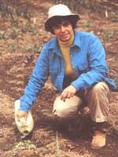

SPRING GARDEN
You can easily turn mere dirt into fertile garden loam
I thought I knew a lot about garden soil until I moved to my present home and tried to plant my first garden there. I wandered out with a shovel to turn the soil for spring planting, and ended up scurrying for a pick-ax to break up the hard-packed clay. It was a far cry from my previous garden, which had such beautiful loamy soil that I could (and often did) harvest potatoes simply by rooting for them with my hands.
Obviously, I needed to know more about the relationship between clay and loam before I could turn the former into the latter.
The first thing I learned is that clay is one of three basic soil types, the other two being sand and silt. All three are made up of rock particles. Clay, as I learned the hard way, consists of fine particles that turn brickhard when dry and that cling to a shovel when wet. Sand, I knew from my years living in the Arizona desert, is coarse, gritty, and porous, whether dry or wet. Silt lies halfway between clay and sand. When wet, it sticks together but doesn't stick to a shovel.
Loam (aha!) contains a mixture of clay, sand, silt, and humus. Since clay, sand, and silt are made up of rock minerals, they comprise the inorganic component of loam. Humus, by contrast, is decomposed plant matter and is therefore the organic component. Good garden loam contains at least S% humus, and humus improves sandy soil by increasing its ability to absorb and retain moisture. It also improves clay soil by loosening it, making the soil easier to work, and preventing surface crusting so that sprouting plants don't have to struggle so hard to pop through. This is just what my clay soil needed.
An obvious source of humus is used barn bedding, worked directly into the soil. But it was spring and I was ready to plant. I didn't have time to wait for "hot" manure to decompose. Fall is the time to work manure-soaked bedding into the soil, in anticipation of spring planting. Another obvious source of humus is compost, but I had just moved and didn't yet have a compost pile. I remedied that right away by nailing some planks into a series of four-foot-square corrals and tossing in all the kitchen scraps, grass clippings, and other organic matter I could get my hands on. Kept slightly moist and aerated by occasional turning, the "pile" would one day provide all the compost my garden needed.
Like any other source of humus, compost improves soil texture and makes the soil easier to work. Compost also adds nutrients and encourages the growth of beneficial soil-borne microorganisms that dissolve those nutrients, so they can be readily absorbed by plant roots. But my compost pile was growing slowly and decomposing even more slowly. I needed lots of humus in a hurry. So I called a local saw mill and had them deliver several truckloads of well rotted sawdust to till into my garden. Voila! I had loam. But it wasn't yet fertile loam.
Clay, sand, silt, and humus all contribute certain nutrients that plants need in order to grow and thrive. Just what kind of nutrients loam contains, and how much of each, depends on three things: the sources of the mineral and organic matter making up the soil, the degree to which the soil has been weathered and eroded, and the amount of nutrients used up by plants previously grown in the soil.
The major plant nutrients nitrogen (N), phosphorus (P), and potassium or "potash" (K)-are the most likely nutrients to be deficient in garden soil. Bagged fertilizers have three numbers on the label (5-10-5, for example), representing the percentage of each nutrient that the fertilizer contains. Chemical fertilizers contain only those elements. Fertilizers derived from natural sources contain, in addition, a variety of micro nutrients, or trace elements, that plants use in lesser amounts. While chemical fertilizers can be manufactured to precise specifications, natural fertilizers vary somewhat in NPK values, depending on the source. Any good garden book lists various sources and their average NPK values. If you buy a bagged natural fertilizer, such as bone meal or blood meal, the label will tell you the NPK value for that particular lot. Compared to natural fertilizers, chemical fertilizers appear to be less expensive. They also dissolve more readily in water, giving plants a quicker boost. But because they dissolve so readily, chemical fertilizers also quickly leach out of the soil. Natural fertilizers, on the other hand, release nutrients over a longer period of time. In the long run, therefore, natural fertilizers are a better buy.
Natural fertilizers are a good deal for other reasons as well. Compared to chemical fertilizers, they don't burn the delicate roots of seedlings, they don't destroy beneficial microorganisms in the soil, and they increase a plant's resistance to disease. Chemical fertilizers do just the opposite, which works out nicely for the manufacturers of chemical products, since they sell more insecticides, fungicides, and other chemical poisons.
When you add lots of compost to keep up the humus level of your garden, you don't have to worry much about NPK. Good compost provides most of the nutrients plants need. But if you're in the process of building up soil fertility, like I am, your garden plants need an occasional NPK boost. Furthermore, applying a little fertilizer at strategic times helps any plant reach its fullest potential. Strategic times to fertilize are: when a plant develops true leaves, when it begins to bloom, and again when it starts setting fruit.
If you have access to manure, you can provide a quick nitrogen pickme-up for any plant that's about to bloom by giving it a shot of manure tea. Cover manure in water and let it steep for about a month, strain out the solids (toss them into your compost heap), and dilute the liquid to the color of weak tea.
Another good source of nitrogen is dried blood meal, a slaughter-house byproduct. A good source of phosphorus is bone meal, a slaughter-house product made of steamed, ground-up bones. Heating it with wood gives you a ready source of potassium in the ashes from your stove-about 50 pounds of ashes for every cord you burn. In addition to supplying potassium, wood ashes also sweeten acidic soil. Soil acidity (pH) is measured on a scale of 0 to 14; 7 is neutral. Soil that's be low 7 is acidic; soil that's above 7 is alkaline. Extremes in pH tie up nutrients, and most vegetables do best in neutral soil.
The ashes of dense hardwoods like oak and hickory are best for sweetening soil. Apply no more than 20 pounds per 1,000 square feet per year. If your soil is on the alkaline side, you can lower the pH by working in sawdust, leaf mold, or peat moss. Because I used lots of sawdust to improve my soil's humus level, I also added ashes to balance its pH. Now that I've got plenty of compost, my soil's acidity takes care of itself, since compost tends to neutralize pH. Despite all the sawdust, ashes, and compost I've added, my garden's soil still isn't perfect-but it is well on its way.
SOIL TESTS
To find out what's in the soil in your garden, fill a quart jar one-third full with soil and two-thirds full with water. Shake the jar and set it aside until the soil settles into layers: The bottom layer will be sand; above the sand will be a layer of silt; then comes a layer of day; and on top of the water will float undecomposed organic matter. A good mix contains about 20 percent clay, 40 percent silt, and 20 percent sand plus organic matter. Another way to find out what kind of soil you have is to squeeze a moist sample in your hand. If the soil forms a tight, sticky ball, it contains too much clay. If it feels grainy and crumbles no matter how hard you squeeze, it has too much sand. If it forms a loose mound when you squeeze gently, but crumbles when you squeeze harder, you've got good garden loam.
Old-time gardeners used to taste their soil to find out whether it was acidic or alkaline. If the soil tasted sour, it was acidic; if bitter, it was alkaline. If it tasted sweet, it was just right. You don't have to eat dirt to test your soil's pH. You can buy a pH test kit, or you can shake a tablespoon of dry soil and a tablespoon of white vinegar together in a jar small. Put the jar to your ear. If it fizzes, your soil is alkaline. If the fizzing is weak, or you hear nothing at all, clean the jar and put in another tablespoon of soil. Add a few drops of ammonia and fill the jar two-thirds full with distilled water (you can use rain water if you're sure it isn't acid rain). Set the jar aside for a couple of hours. If the water turns dark, your soil is acidic.
Fertilizers:
Earlee, Inc.
2002 Highway 62
Jeffersonville, IN 47130
812-282-9134
Erth-Rite, Inc.
RD 1 Box 243
Gap, PA 17527
717-442-4171
Mellinger's, Inc.
2310 W South Range Road
North Lima, OH 44452
800-321-7444
Necessary Trading Company
PO Box 305
New Castle, VA 24127
703-864-5103
Peaceful Valley Farm Supply
PO Box 2209
Grass Valley, CA 95945
916-272-4769
|
 Author Gail Damerow gives her plants a boost with an application of natural fertilizer. By applying this fertilizer at a strategic time, plants will reach their fullest growth potential. |
|
|